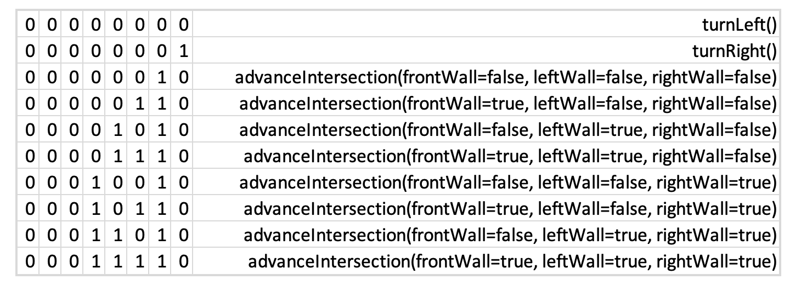
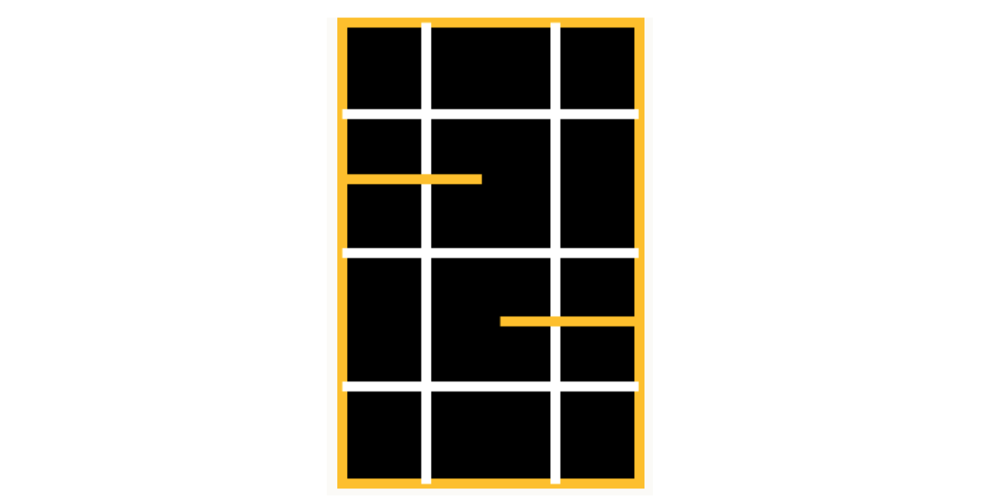

Integrate all components previously worked on in labs 1-2 and
milestones 1-2. This consists of creating a robot that:
Starts on a 660 Hz tone
Navigates a small test maze autonomously
Sends maze information it discovers wirelessly to a base station
Displays the updates on the base station (used for debugging)
One group will work on the radio component and the other on integrating
the various functionality. At the end of the lab, this work will be
unified so that the robot can run through the maze and update the GUI
as it explores.
Prelab
Discuss method to encode maze information
Kenneth designed Maze class and software hierarchy
Final maze has the following specifications:
9 × 9 squares
Each square can be explored or unexplored
Each square can have walls on either and all sides
Each square can have treasures (with three shapes and two colors
Each square can potentially have other robots or decoys
To begin, we split into two groups of two. Each group progressed
through the lab individually, as described below.
Robot Integration Team = Brian and Kenneth
Radio Team = Eric and Tyler
NOTE - due to the complexity and interconnectedness of the functions
in this lab, we frequently came together as one large group to track
progress and talk through issues
Radio Team
GOAL: send maze information wirelessly between Arduino’s
We programmed the "GettingStarted" sketch onto both Arduinos
Allowed us to open a serial monitor for each radio simultaneously
Initial Issues:
Broken hardware
Broken female-to-male jumper wire (no connectivity)
After addressing these issues, we were able to experiment with the radios
We cycled through the power level settings to test the range
Minimum of 15 feet range is needed for the final competition
RF24_PA_MIN = 7 feet
RF24_PA_LOW = 10 feet
RF24_PA_HIGH = 17 feet
RF24_PA_MAX = 25 feet --> we decided to use this for extra reliability
NOTE - straight-line distance was measured in the hallway with no obstructions
NOTE - these were found to be the values at which no packet-loss was detected for 25 consecutives transmissions
Sending Maze Information Between Arduinos
Our software is structured such that a Maze object is stored on both the Robot and the Base Station
The Maze object is updated using one of the following commands:
turnLeft()
turnRight()
advanceIntersection()
At a high-level, this process looks as follows
Robot logic determines what movement to take and updates its Maze object
Robot encodes the Maze update function using the chart below
Robot transmits this instruction, in 1 byte, to the base station
Base station receives the 1 byte instruction
Base station decodes the instruction using the chart below
Base station calls the Maze update method, which keeps the two Maze objects equivalent
Due to the simplicity of this structure, we can encode all of the information in 1 byte
Our receiver is set to send an Ack Payload confirming receipt of the instruction
We intend on making this error checking more robust

Figure 1 - Byte encoding chart
Creating the Base Station
Our base station Arduino is programmed with a different main sketch than our robot
Although they share sub-function libraries (.cpp and .h files)
Maze.h and Maze.cpp
nordic_rf.h and nordic_rf.cpp
Robot is hard-coded to perform Transmitter setup and only call Transmitter functions
Base station is hard-coded to perform Receiver setup and only call Receiver functions
The base station has a main loop that runs the following processes:
Receive transmission from robot (1 byte)
Decode the transmission using the table in Figure 1 (above)
Run the required command to update the base station Maze object
Transmit the updated information to the GUI
Calls the command: getGUIMessage(byte x, byte y)
x = current x location = getX()
y = current y location = getY()
Base Station-to-GUI Transmission
FROM THE LAB INSTRUCTIONS: One this works, think about the software
architecture on your base station. How often do you want to
communicate with the GUI? All the time, or could you make this an
event-driven operation?
Robot Integration Group
GOAL: Robot-to-GUI integration, full exploration, and update the GUI
Materials Used
Our robot
All code from past labs
IR Decoy
660 Hz tone generator
Partner with another team to show robot avoidance
Walls to make the maze set up (follow this layout

Maze layout for testing
Discuss Data Sotrage / Maze Object
INFO
Integrate Radio Communication into Software
Since we had done such a good job integrating our systems for Milestone 2, minimal changes had to be made for Lab 3
First, we integrated our new sub-function libraries
Maze.h and Maze.cpp
nordic_rf.h and nordic_rf.cpp
As previously mentioned, these are the exact same files that the base station uses (modularity!)
Second, we updated our main loop movement logic
The code is identical to the code from Milestone 2, with the addition of just 5 new lines
// wall detected at intersection
if ((sensorStatus[0] == 0) && (sensorStatus[1] == 0) && (sensorStatus[2] == 0) && detect_wall_6in(3) ) {
if (detect_wall_6in(1)){
turnLeftIntersection(servo_L, servo_R);
send_advance_intersection(radio, true, false, true); //NEW LINE
send_turn_left(radio); //NEW LINE
}
else{
turnRightIntersection(servo_L, servo_R);
send_advance_intersection(radio, true, false, false); //NEW LINE
send_turn_right(radio); //NEW LINE
}
}
// wall detected but not at an intersection
else if (detect_wall_3in(3)) {
turnLeft(servo_L, servo_R);
send_turn_left(radio); //NEW LINE
}
// no wall detected --> just track the line
else if (sensorStatus[0] == 0) //turn Right
adjustRight(servo_L, servo_R, 85);
else if (sensorStatus[2] == 0) //turn Left
adjustLeft(servo_L, servo_R, 85);
else {
moveForward(servo_L, servo_R);
}
Full System Testing
REPLACE THIS LINK WITH THE REAL VIDEO AFTER WE TAKE IT